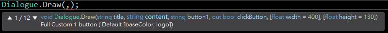

VisualEffect
2022.12.06
當遊戲內暫停使用方法為(Time.timeScale = 0)，由VisualEffect 裡的UpdateParticle 無法暫停，必須使用OutPutMesh設置Update參數。
Unity UGUI介面
2022.11.16
調整解析度問題
只要有跟血條外框對到的血條(血條放上血條外框對齊)，Anchors min max應跟隨血條做 滿版設置，解析度會跟隨外框一起做運動變形只要沒有跟血條外框對到，且單獨分開的血 條，Anchors應為只有血條外框的滿版，解析度會跟隨外框位置進行變更。
Unity GUIStyle 顏色對比
2023.01.05
https://blog.csdn.net/chelen_jak/article/details/108508694
今日在製作畢製的過程，處理內置Debug功能，在GUI處理上遇到顏色對比的問題。
上網查了查色相色譜公式，查到有關html色系的講解，並將其方法用在unity，180度的顏
色是互補色，只要用RGB位元通道下最大的值減去某顏色的值，即可以獲得互補色~
在8位元通道下RGB為2^8 = 256，當然還有16位元，32位元的通道。
UnityRGBA獲取對比色簡單的方法
Unity的Color是以RGBA顏色表示，這種架構在Unity負責傳遞顏色，而顏色是由浮點0~1，因 此只要將1減去想要獲得對比色的顏色，即可。
在hover時獲取對比色

GUIStyle
以上紅線是處理遊戲內置Debug功能時，想要獲取的顏色值。
開發感想
2023.06.02
Unity遊戲開發結構感想
相信一開始了解引擎背後TimeLine是最為重要，畢竟開發時，一些架構沒處理好， 就會造成往後諸多難處，在開發時，有次碰到一個前所未有的事件: 有一組件A，及組件B、C，各自繼承MonoBehaviour，A掛在場景空物件上，B掛在預置體(Prefab)上，而這個Prefab是在Awake 生成的，也就是說如果要獲取組件B必須要以Tag或是其他方式，不能直接以序列化字段(SerializeField) 獲取組件B，同時我在A組件的生命周期方法Start中以Tag方式獲取到B組件，接著A方法F中調用B組件上的方法， 再以C組件中的OnEnabled調用這個A組件的方法F，為甚麼這麼繞呢主要是因為不想要在C組建中再次去抓取B組件， 只要獲得A組件即可使用B組建中的方法。 這時候問題就來了，當我在C的OnEnabled事件中調用A組件的方法F，就會報錯，主因是B組件的獲取是在A組件的Start中獲取的 而OnEnabled是在Start週期前執行，想當然獲取不到進而報錯，嘗試了Invoke確實可行但我想讓腳本更明確化一點，也就是 構思變成這樣；在A的Start執行完畢後執行某一事件，思來想去，還把方向用成怎麼讓Start加載完畢時，使用一個Event? ，最後到頭來還挺簡單，只要在Start尾端放上某一方法也就是在獲取完某一物件，就調用獲取組件的方法，便可執行，因為數值輸入到A數值中， 也是在組件C的OnEnable完成，不用在C組件當中調用任何方法或是Event，就可以調用這個B組件的方法，來達到調用效果。聽起來挺容易，但投入時 ，思想會跟著策略走，進而影響到自身，會想要以更複雜的方式去完成，但其實重新思考一遍，便可以整理整體的資訊概要，以最簡單的方式，去完成 結構與架構的鋪設。
Popup心得
2023.06.15
一開始接觸到Unity最想知道的就是Popup的製作，畢竟是UI界面處理的東西，雖然也可以在場景中 生成Quad之類的，但我還是覺得製作時應該明確分工，介面上就交給Canvas這樣分類才會明確，以前是直接用代碼 敲出來生成的位置等等...並且是生成在WorldSpace當中，這部分就要考慮到UIcamera是否有正確設置，很麻煩， 會有一堆問題，因為畢竟是直接生成在場景中 然而上述代碼，如果沒有仔細去調整數據的話，便很難產生Popup大幅度的特色。 之後便開始研究Popup，這三個是近期從自己撰寫的遊戲中，整理出來的，也是個人覺得最合理、最常見的。


Unity Extensions
2023.07.10
最近開發了一款unity 插件，在unity就可以實現畫圖功能，因為經常使用photoshop進行繪圖， 加上每次都要把PhotoShop打開很消耗時間，我就在unity上開發了這樣一款繪圖功能。最初版本基本功能 都有，例如: 塗抹、筆刷、橡皮擦、放大縮小、儲存圖片、塗層、調色盤，目前還在調整中!

Unity Extensions Notes unity version 2021.3.6f1
2023.09.15
在撰寫Unity插件時，也同樣會運用到各種Unity內部的API， 其中"UnityEditor.EditorUtility.DisplayDialog"這個方法是寫出unity 內部的Dialogue，用來做為設計者的提示工具，但調用這個參數或相關的參數， 會面臨到一個問題，假設一開始Focus的視窗在自定義視窗， 然後調用"UnityEditor.EditorUtility.DisplayDialog"方法， 接著關閉提示工具後，Unity Focus對象就會是Unity本身的視窗，而不是自定義視窗， 但這時候Unity提示藍標卻會顯示當前Focus在自定義視窗，實際上Focus對象卻是Unity本身， 在此記錄一下編輯時發現的問題。
解決辦法就只要在調用完後添加回Focus當前視窗就可以了。
Unity Custom Dialogue Tools
2023.09.20
Unity Extension API 其中的 UnityEditor.EditorUtility.DisplayDialog， 能讓Dialogue更自由的更改圖標Logo或是配色等，所開發出的自訂義對話框，並且不會有上一個講 述的Focus 問題，他按完按鈕，會Focus到，一開始生成視窗的EditorWindow。
.png)
.png)
.png)
.png)